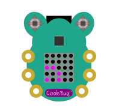
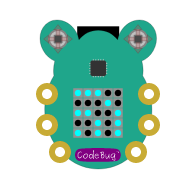

Joining an existing WiFi Network¶
By default CodeBug Connect has WiFi turned on. When CodeBug Connect starts up, it will try to connect to a wireless network. Unlike many similar devices CodeBug Connect stores a list of possible networks and will choose the strongest. If it can’t connect to one (for instance, none is available, or the network SSID or password is wrong), it will host its own Access Point for you to connect to it.
You can configure WiFi either by editing the wifi.cfg file or through menus in a web browser. We recommend using a web browser.
Setting up WiFi though a web browser¶
If you haven’t already set up WiFi you need to first connect to the access point hosted by CodeBug Connect.
Power on Codebug Connect.
CodeBug Connect will scan for available networks, indicated by purple wifi scan.
Assuming no suitable network is found, CodeBug Connect’s display will indicate this by briefly showing blue before starting an access point.
CodeBug Connect will scroll in red ap followed by the name of its access point. The name will be
codebug_xxxxxxxwhere x is a number or letter a-f. Perform a scan for wireless networks on your computer or smartphone and choose to connect to the correspondingcodebug_xxxxxxxnetwork.Note
When you connect to your CodeBug Connect as an access point your laptop will no longer be connected to your old access point and as such may not have Internet access!
Upon a successful connection CodeBug Connect will scroll an address beginning
http://in green. Usually, this will behttp://192.168.4.1.On your laptop or smart phone open a web browser and visit http://codebug.local . This may not work for some operating systems, in which case you need to enter the green number that scrolled past (which will usually be http://192.168.4.1)
After a few seconds CodeBug Connect’s onboard IDE will load. Click the WiFi button on the top right.
CodeBug Connect will scan for WiFi networks nearby. Choose your access point and enter your WiFi’s password.
Wait for the window to reload. It should show the newly stored access point.
Click reboot. You may need to reselect your usual WiFi access point for your laptop or smartphone.
CodeBug Connect will now try and connect to the stored access point.
If successful CodeBug Connect will briefly show green and then scroll the address CodeBug has been assigned by your router. You may need to make a note of this address if connecting to http://codebug.local did not work earlier.
You should now be able to connect to your CodeBug Connect on your local network by visiting http://codebug.local or if that doesn’t work, the address you made a note of.
From here you can run edit and debug program from CodeBug’s onboard IDE or deploy your projects remotely.
On-board IDE guide.
Remote Deployment guide.
Setting up WiFi over USB filestore¶
If you can’t or don’t want to setup a WiFi connection with your web browser, you edit the wifi.cfg file instead.
Disconnect CodeBug Connect from all power sources.
Press and hold the centre of Joystick A in while plugging CodeBug Connect into your computer’s USB port. Keep it held until USB scrolls across in yellow. CodeBug Connect will show a yellow file icon when ready.
Note
Some computers, particularly Apple Macs, may take a few seconds to recognise CodeBug Connect as a disk.
In your operating system’s file manager navigate to CodeBug Connect and open
wifi.cfgin a text editor.Add a new line with the name of your WiFi network and your WiFi password. You must enclose the network name and password each in
"and separate them with,.For example if your network was called
home_wifiand it’s password waspw123then you would add the following intowifi.cfg."home_wifi","pw123"
Note
The first time CodeBug Connect reboots after you have edited wifi.cfg it will extract your password and replace it with *. This is to prevent the password being easily visible in the file.